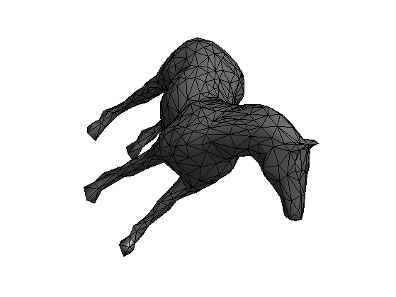
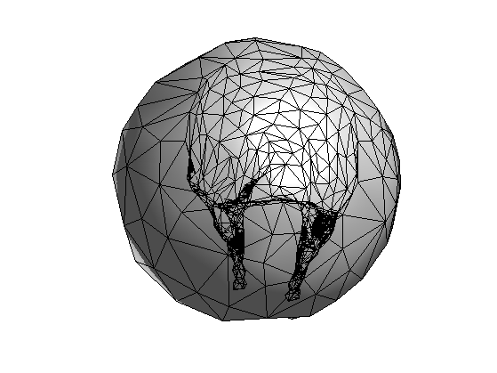
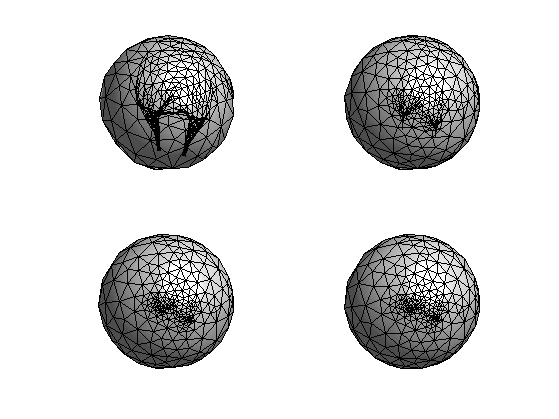
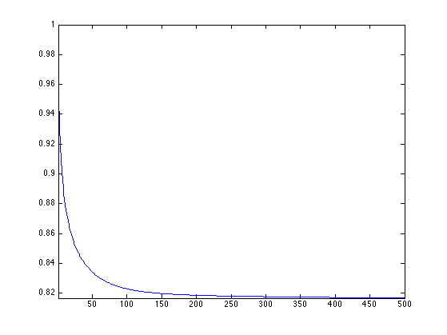
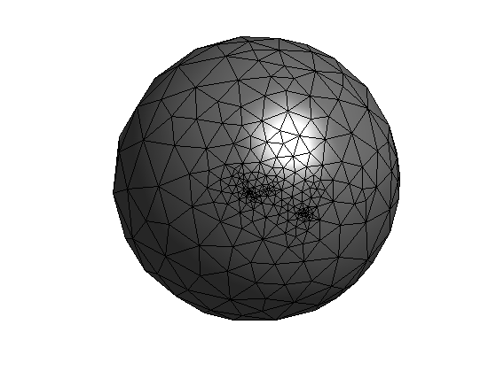
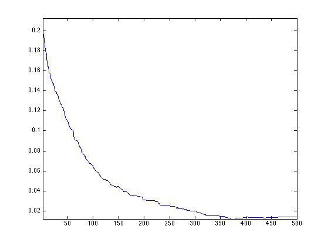
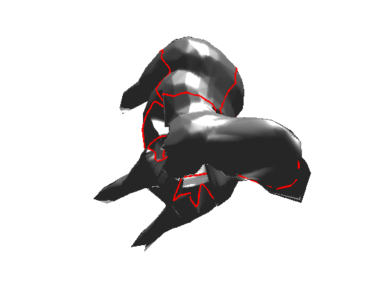
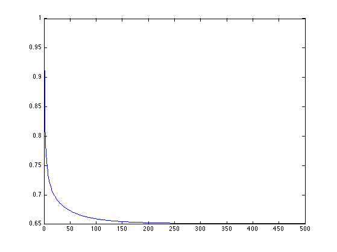

Spherical Mesh Parameterization
This tour explores parameterization of 3D surfaces onto a sphere.
Contents
We use a simple minimization of the Dirichlet energy under spherical constraints. There is no theoritical guarantee, but for some meshes, it seems to work correctly.
Installing toolboxes and setting up the path.
You need to download the following files: signal toolbox, general toolbox, graph toolbox and wavelet_meshes toolbox.
You need to unzip these toolboxes in your working directory, so that you have toolbox_signal, toolbox_general, toolbox_graph and toolbox_wavelet_meshes in your directory.
For Scilab user: you must replace the Matlab comment '%' by its Scilab counterpart '//'.
Recommandation: You should create a text file named for instance numericaltour.sce (in Scilab) or numericaltour.m (in Matlab) to write all the Scilab/Matlab command you want to execute. Then, simply run exec('numericaltour.sce'); (in Scilab) or numericaltour; (in Matlab) to run the commands.
Execute this line only if you are using Matlab.
getd = @(p)path(p,path); % scilab users must *not* execute this
Then you can add the toolboxes to the path.
getd('toolbox_signal/'); getd('toolbox_general/'); getd('toolbox_graph/'); getd('toolbox_wavelet_meshes/');
Smoothing Operator
We start by creating a smoothing operator.
First load a mesh.
name = 'horse'; [vertex,faces] = read_mesh(name); n = size(vertex,2); m = size(faces,2); clear options; options.name = name;
Display the mesh.
clf;
options.lighting = 1;
plot_mesh(vertex,faces,options);
shading faceted;
 Compute the weights. The weights should be positive for the method to work.
weight = 'conformal'; weight = 'combinatorial'; switch weight case 'conformal' W = make_sparse(n,n); for i=1:3 i1 = mod(i-1,3)+1; i2 = mod(i ,3)+1; i3 = mod(i+1,3)+1; pp = vertex(:,faces(i2,:)) - vertex(:,faces(i1,:)); qq = vertex(:,faces(i3,:)) - vertex(:,faces(i1,:)); % normalize the vectors pp = pp ./ repmat( sqrt(sum(pp.^2,1)), [3 1] ); qq = qq ./ repmat( sqrt(sum(qq.^2,1)), [3 1] ); % compute angles ang = acos(sum(pp.*qq,1)); a = max(1 ./ tan(ang),1e-1); % this is *very* important W = W + make_sparse(faces(i2,:),faces(i3,:), a, n, n ); W = W + make_sparse(faces(i3,:),faces(i2,:), a, n, n ); end case 'combinatorial' E = [faces([1 2],:) faces([2 3],:) faces([3 1],:)]; E = unique_rows([E E(2:-1:1,:)]')'; W = make_sparse( E(1,:), E(2,:), ones(size(E,2),1) ); end
Compute the normalized weight matrix tW such that its rows sums to 1.
d = full( sum(W,1) ); D = spdiags(d(:), 0, n,n); iD = spdiags(d(:).^(-1), 0, n,n); tW = iD * W;
Spherical Relaxation
It is possible to smooth the positions of the mesh on the sphere by performing an averaging according to W, and projecting back on the sphere.
Compute an initial mapping on the sphere. This simply a radial projection.
vertex1 = vertex; vertex1 = vertex1 - repmat( mean(vertex1,2), [1 n] ); vertex1 = vertex1 ./ repmat( sqrt(sum(vertex1.^2,1)), [3 1] );
Check which faces have the correct orientation.
% normal to faces [normal,normalf] = compute_normal(vertex1,faces); % center of faces C = squeeze(mean(reshape(vertex1(:,faces),[3 3 m]), 2)); % inner product I = sum(C.*normalf);
Ratio of inverted triangles. For a bijective mapping, there should not be any inverted triangle.
disp(['Ratio of inverted triangles:' num2str(sum(I(:)<0)/m, 3) '%']);
Ratio of inverted triangles:0.224%
Display on the sphere.
options.name = 'none'; clf; options.face_vertex_color = double(I(:)>0); plot_mesh(vertex1,faces,options); colormap gray(256); axis tight; shading faceted;
Perform smoothing and projection.
vertex1 = vertex1*tW'; vertex1 = vertex1 ./ repmat( sqrt(sum(vertex1.^2,1)), [3 1] );
Exercice 1: (check the solution) Perform iterative smoothing and projection. Record the evolution of the number of inverted triangle in ninvert. Record also the evolution of the Dirichlet energy in Edir.
exo1;
Display the decay of the evolution of the Dirichlet energy.
clf;
plot(Edir/Edir(1));
axis('tight');
 Display final spherical configuration.
clf; plot_mesh(vertex1,faces); colormap gray(256); axis tight; shading faceted;
Display the evolution of the number of inverted triangles.
clf;
plot(ninvert/m); axis tight;
 Spherical Geometry Images
Using this spherical parameterization, one maps the surface on a sphere, then on an octahedron, and finally on a square. This allows to map the surface on a 2D image, thus creating a geometry image.
The method is originaly described in
Spherical Parameterization and Remeshing E. Praun, H. Hoppe Proceedings of SIGGRAPH 2003
q = 128; options.verb = 0; M = perform_sgim_sampling(vertex, vertex1, faces, q, options);
Display the spherical geometry image.
clf; plot_geometry_image(M, 1, 1); axis equal; colormap gray(256); view(134,-61);
Mesh Morphing
By mapping two meshes on the same sphere, one computes a bijection between two meshes.
By linearly interpolating the positions of the points that are in correspondance, one performs a warp of a mesh onto another one.
Exercice 2: (check the solution) Implement the mesh morphing.
exo2;
Spherical Relaxation with Area Correction
Spherical relaxation leads to an uncontrolled evolution because triangle are not constrained in size.
To avoid this, it is possible to penalize the size of large triangle.
This is similar to the method proposed in:
Unconstrained Spherical Parameterization Ilja Friedel, Peter Schröder, and Mathieu Desbrun Journal of Graphics Tools, 12(1), pp. 17-26, 2007.
First initialize the gradient descent.
vertex1 = vertex; vertex1 = vertex1 - repmat( mean(vertex1,2), [1 n] ); vertex1 = vertex1 ./ repmat( sqrt(sum(vertex1.^2,1)), [3 1] );
Step size for the gradient descent.
eta = .5;
Compute the center of the faces.
A = squeeze(mean(reshape(vertex1(:,faces),[3 3 m]), 2));
Compute the Dirichlet energy of each face.
E = zeros(1,m); for i=1:3 i1 = mod(i,3)+1; % directed edge u = vertex(:,faces(i,:)) - vertex(:,faces(i1,:)); % norm squared u = sum(u.^2); % weights between the vertices w = W(faces(i,:) + (faces(i1,:)-1)*n); E = E + w.*u; end
Compute gradient direction.
G = zeros(3,n); for j=1:m f = faces(:,j); Alpha = A(:,j); alpha = norm(Alpha); for i=1:3 i1 = mod(i ,3)+1; i2 = mod(i+1,3)+1; % directed edges u1 = vertex(:,f(i)) - vertex(:,f(i1)); u2 = vertex(:,f(i)) - vertex(:,f(i2)); % weights between the vertices w1 = W(f(i) + (f(i1)-1)*n); w2 = W(f(i) + (f(i2)-1)*n); G(:,f(i)) = G(:,f(i)) + (w1*u1 + w2*u2) ./ alpha^2 - Alpha/alpha^4 * E(j); end end
Perform the gradient descent step and the projection.
vertex1 = vertex1 - eta*G; vertex1 = vertex1 ./ repmat( sqrt(sum(vertex1.^2,1)), [3 1] );
Exercice 3: (check the solution) Perform the full descent. Record the decay of the energy in Edir.
exo3;
Plot the decay of the energy.
clf; plot(Edir/Edir(1));